67 значков: 11 тиров × 6 ступеней + «без ранга» (0-0, Obscurus). Источник — файлы игры (rankN/badge_lg_subrankM через зеркало deadlock-api; GameTracking-Deadlock сам по себе не клонится — см. отчёт). Каждый: обрезка по альфе, 4 % воздуха, квадрат по центру значка, прозрачный фон, webp 256 и 64. Под большим — тот же значок в размере 64 px, как на мелких местах сайта.
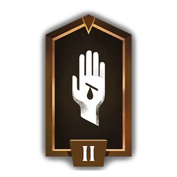
1-2 · Initiate 2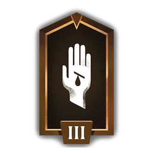
1-3 · Initiate 3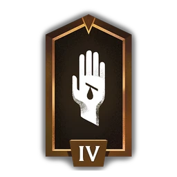
1-4 · Initiate 4 1-5 · Initiate 5 1-6 · Initiate 6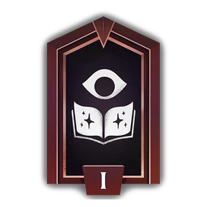
2-1 · Seeker 1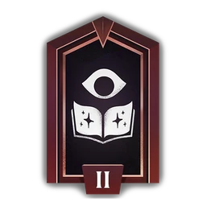
2-2 · Seeker 2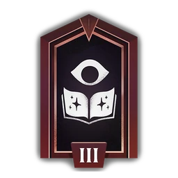
2-3 · Seeker 3 2-4 · Seeker 4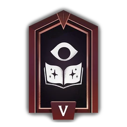
2-5 · Seeker 5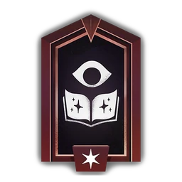
2-6 · Seeker 6 3-1 · Acolyte 1 3-2 · Acolyte 2 3-3 · Acolyte 3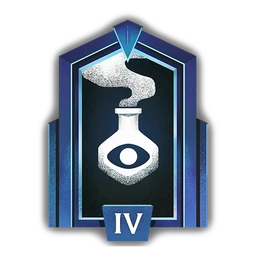
3-4 · Acolyte 4 3-5 · Acolyte 5 3-6 · Acolyte 6 4-1 · Sentinel 1 4-2 · Sentinel 2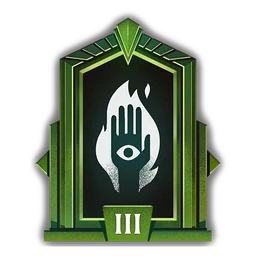
4-3 · Sentinel 3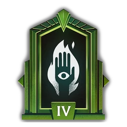
4-4 · Sentinel 4 4-5 · Sentinel 5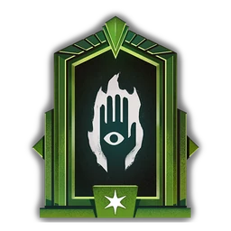
4-6 · Sentinel 6 5-1 · Mystic 1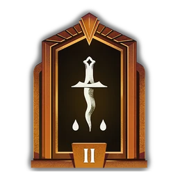
5-2 · Mystic 2 5-3 · Mystic 3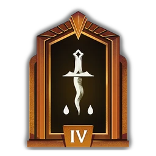
5-4 · Mystic 4 5-5 · Mystic 5 5-6 · Mystic 6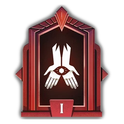
6-1 · Ritualist 1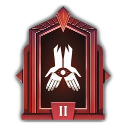
6-2 · Ritualist 2 6-3 · Ritualist 3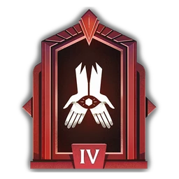
6-4 · Ritualist 4 6-5 · Ritualist 5 6-6 · Ritualist 6 7-1 · Emissary 1 7-2 · Emissary 2 7-3 · Emissary 3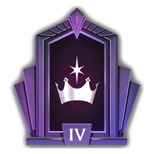
7-4 · Emissary 4 7-5 · Emissary 5 7-6 · Emissary 6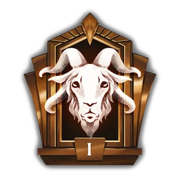
8-1 · Oracle 1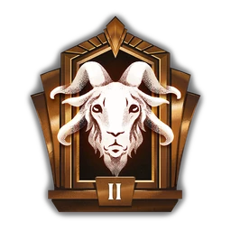
8-2 · Oracle 2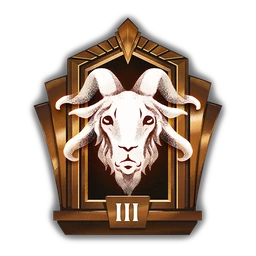
8-3 · Oracle 3 8-4 · Oracle 4 8-5 · Oracle 5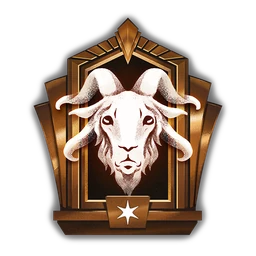
8-6 · Oracle 6 9-1 · Phantom 1 9-2 · Phantom 2 9-3 · Phantom 3 9-4 · Phantom 4 9-5 · Phantom 5 9-6 · Phantom 6 10-1 · Ascendant 1 10-2 · Ascendant 2 10-3 · Ascendant 3 10-4 · Ascendant 4 10-5 · Ascendant 5 10-6 · Ascendant 6 11-1 · Eternus 1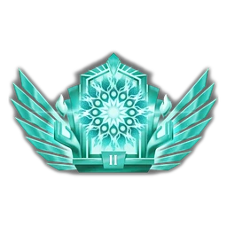
11-2 · Eternus 2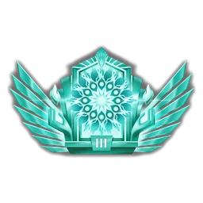
11-3 · Eternus 3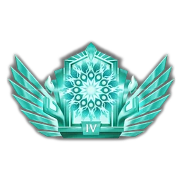
11-4 · Eternus 4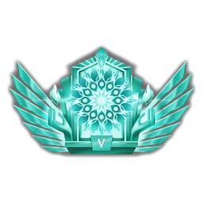
11-5 · Eternus 5 11-6 · Eternus 6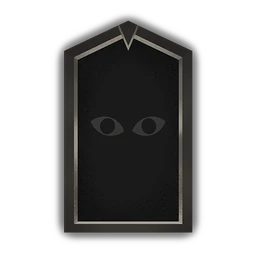
0-0 · Obscurus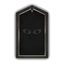